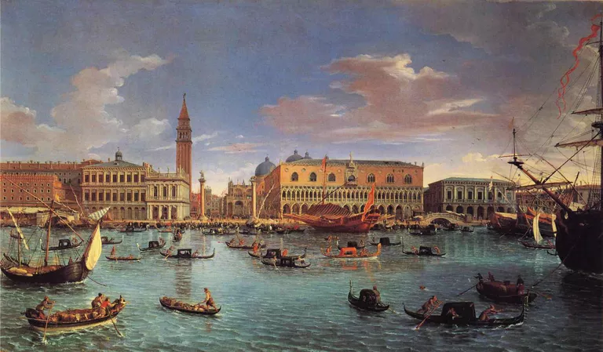

HISTORY VENICE

Updated February 01, 2020
Venice is a city in Italy, best known today for the many waterways which criss-cross through it. It has
developed a romantic reputation built upon by countless movies, and thanks to one startling horror film has
also evolved a darker atmosphere. The city has a history dating from the sixth century, and once wasn't just
a city in a larger state: Venice was once one of the greatest trading powers in European history. Venice was
the European end of the Silk Road trade route which moved goods all the way from China, and consequently was
a cosmopolitan city, a true melting pot.